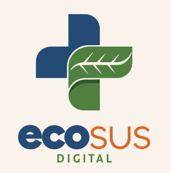

Este painel tem o objetivo de apoiar profissionais da saúde no reconhecimento e conscientização de riscos clínicos associados a eventos climáticos, com base no Guia de Bolso: Mudanças Climáticas para Profissionais da Saúde, elaborado pelo Ministério da Saúde.
Existem dois modos de navegação: